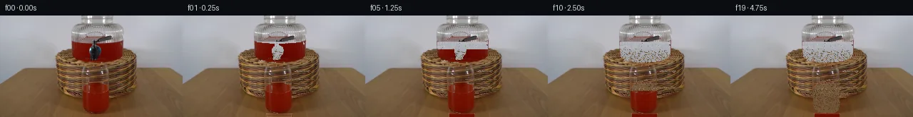

![首帧]()

Round 00
2026-11-05T16:48:17.417240+00:00像素候选变化代码 +376/−0inspection 更新
pixels 30030b96f1c85bf0 · code 87bb88a445999b83
查看本轮 generate.py 真实 diff
--- previous/generate.py
+++ current/generate.py
@@ -0,0 +1,376 @@
+"""generate.py — PixelWorld-Text video generation for case_0068.
+Scene: Glass beverage dispenser on woven basket, half-filled with red liquid,
+pouring into a drinking glass below.
+20 frames at 256×144, 4 fps, 5 seconds.
+Frame 00 must exactly equal first_frame.png.
+"""
+
+import numpy as np
+from PIL import Image
+from pathlib import Path
+import sys
+
+# ------------------------------------------------------------
+# 0. Load first frame
+# ------------------------------------------------------------
+workspace = Path(__file__).parent
+first = np.array(Image.open(workspace / "first_frame.png")).astype(np.uint8)
+H, W = 144, 256
+assert first.shape == (H, W, 3), f"Expected (144,256,3), got {first.shape}"
+
+# ------------------------------------------------------------
+# 1. Build red-liquid mask and background estimator
+# ------------------------------------------------------------
+# Red liquid: R dominant over G and B, with low G and B values.
+# Use a relaxed threshold to capture all liquid including edge blends.
+red_mask = np.zeros((H, W), dtype=bool)
+for y in range(H):
+ for x in range(W):
+ r, g, b = int(first[y, x, 0]), int(first[y, x, 1]), int(first[y, x, 2])
+ # Core red: very strong R, low G/B
+ if r > 70 and r > g * 2 and g < 65 and b < 50:
+ red_mask[y, x] = True
+ # Edge blend: moderate R dominance
+ elif r > 55 and r > g * 2 and g < 80 and b < 60 and (r - g) > 30:
+ red_mask[y, x] = True
+
+# Get liquid bounds
+red_rows = np.where(red_mask.any(axis=1))[0]
+liquid_top = red_rows[0] # y=37
+liquid_bot = red_rows[-1] # y=139
+print(f"Red liquid: y={liquid_top}-{liquid_bot}, total pixels={red_mask.sum()}")
+
+# For each row, find the x-range of red liquid and side colors
+row_info = {}
+for y in range(liquid_top, liquid_bot + 1):
+ if red_mask[y].sum() > 0:
+ red_xs = np.where(red_mask[y])[0]
+ xl, xr = red_xs.min(), red_xs.max()
+ # Sample left-side non-red pixels (basket background)
+ left_xs = np.where(~red_mask[y, :xl])[0]
+ right_xs = np.where(~red_mask[y, xr+1:])[0] + xr + 1
+ row_info[y] = {
+ 'xl': xl, 'xr': xr,
+ 'left_colors': first[y, left_xs] if len(left_xs) > 0 else None,
+ 'right_colors': first[y, right_xs] if len(right_xs) > 0 else None,
+ 'red_count': len(red_xs),
+ }
+
+# Build a "background" frame showing what the dispenser looks like
+# without liquid: for each red pixel, sample basket colors from the
+# sides of the same row.
+bg_frame = first.copy()
+for y in range(liquid_top, liquid_bot + 1):
+ info = row_info.get(y)
+ if info is None:
+ continue
+ xl, xr = info['xl'], info['xr']
+ left = info['left_colors']
+ right = info['right_colors']
+ # For each x in [xl, xr], interpolate background color from sides
+ for x in range(xl, xr + 1):
+ # Use left or right colors with some randomization for texture
+ if left is not None and right is not None:
+ # Blend: closer to left uses left colors, closer to right uses right
+ t = (x - xl) / max(xr - xl, 1)
+ if np.random.random() < 0.5:
+ src = left[np.random.randint(0, len(left))]
+ else:
+ src = right[np.random.randint(0, len(right))]
+ bg_frame[y, x] = src
+ elif left is not None:
+ bg_frame[y, x] = left[np.random.randint(0, len(left))]
+ elif right is not None:
+ bg_frame[y, x] = right[np.random.randint(0, len(right))]
+ # else: keep original
+
+# Smooth the background fill slightly for visual continuity
… diff truncated; 289 more lines …